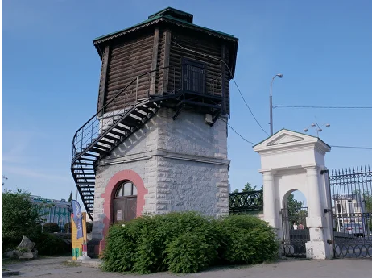
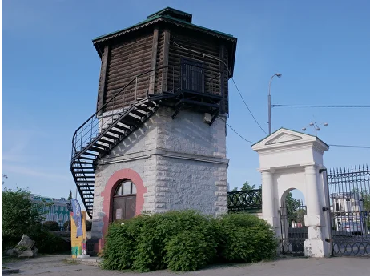

История музея


Музей истории Екатеринбурга был создан на базе музея Якова Свердлова, который открылся в 1940 году.
Первая экспозиция была практически полностью посвящена основным вехам деятельности Свердлова:
революционной борьбе, аресту, работе в заключении, восхождению к вершинам власти, ранней смерти в возрасте 33 лет.
В 1973 году обновляется экспозиция музея он становится одной из главных «церемониальных» площадок города:
в помещениях музея проводятся торжественные и тематические линейки, пионерские сборы, приемы в пионеры,
вручение комсомольских билетов, принимается воинская присяга.
В 1991 году музей Я.М. Свердлова перестал существовать, превратившись в Музей общественно-политических
движений Урала. В 1992 году музей переименовали в Музей политической истории Урала.
И только в 1995 году музей был официально переименован в Музей истории Екатеринбурга.
В 1995 году Музею истории Екатеринбурга была передана Водонапорная башня на Плотинке (здание на Горького, 4в)
В 2016 году в состав музея вошел Мемориал памяти жертв политических репрессий (находится на 12 километре
Московского тракта)
В 2018 году Музей истории Екатеринбурга получил еще одну площадку - дом Маклецкого (здание на Тургенева, 15)
В 2021 году Музею было передано здание по адресу Ленина, 52 / Бажова, 124а, сегодня там размещается
Креативный кластер "Л52"
Уставные документы
- Устав МАУК МИЕ - Изменения в Устав от 2016 г., Изменения в Устав от 2018 г., Изменения в Устав от 2023 г..
- Свидетельство о государственной регистрации юридического лица
- Положение о предоставлении льгот отдельным категориям посетителей
- Свидетельство ИНН
- Паспорт доступности
- Калькуляция стоимости посещения музеев МБУК «Музей истории Екатеринбурга»
- Приказ о внесении изменений в перечень и тарифы платных услуг МБУК «Музей истории Екатеринбурга»
- Приказ №10-од от 04.04.2016 О создании комиссии по устранению недостатков о противодействию коррупции, а также законодательства о музеях, выявленных в ходе прокурорской проверки прокуратурой Кировского района г. Екатеринбурга
- Приказ №15-од от 15.04.2016 Об утверждении нормативных документов по противодействию коррупции
- Приказ об учетной политике на 2019 год
- Приложение №1. Учетная политика для целей бухгалтерского учета на 2019 год
- Приказ об утверждении Положения об организации доступа граждан к музейным предметам и музейным коллекциям МБУК "Музей истории Екатеринбурга" 02-од от 17.06.2020
- Письмо-уведомление о невозможности заключения контракта
- Положение о закупках от 07.07.2022
- Приказ о составе комиссии по противодеиствию коррупции
- Положение о платных услугах
- Положение о платных услугах от 09.01.23
- Положение об антикоррупции
- Положение о предоставлении льгот определенным категориям граждан
- Положение по идентификации опасностеи? и оценке проф. риска
- Приказ об актуализации состава комиссии по противодействию коррупции в связи со сменой директора и сотрудников
Реквизиты
Муниципальное автономное учреждение культуры «Музей истории Екатеринбурга»
Получатель: Департамент финансов Екатеринбурга (МАУК МИЕ, л/сч 89082000011)
Адрес: 620075, г. Екатеринбург,
ул. Карла Либкнехта, д. 26
Тел./факс (343) 371-39-27, (343) 371-21-11
Эл. почта: mie1723ekb@yandex.ru
ИНН/КПП 6660005888/667001001
ОГРН 1036603483751
Директор - Пушкарев Игорь Евгеньевич, действующий на основании Устава
р/счет 03234643657010006200
в Уральском ГУ БАНКА России//УФК по Свердловской области г. Екатеринбург
к/счет 40102810645370000054
БИК 016577551
л/счет № 89082000011
КБК 90830201040040000130
Команда музея
Пушкарев Игорь Евгеньевич
Директор
+7 (343) 3-71-39 27

Мокеева Оксана Валерьевна
Заместитель директора по развитию
+7 (343) 371 12 08

Союрова Алена Васильевна
Заместитель директора по фондам
+7 (343) 371 00 55

Хайрутдинова Светлана Александровна
Зам. по специальным и стратегическим проектам
+7 (343) 371 22 43
Коноваленкова Алена Юрьевна
ИО заведующего PR-отделом
museumekb@yandex.ru

Королева Ольга Алексеевна
Заведующая проектно-выставочным отделом
+7 (343) 350 73 11
Масленников Евгений Романович
Заведующий научно-исследовательским отделом

Печняк Вячеслав Александрович
«Дом Маклецкого»
ул. Тургенева, 15

Нечаев Николай Андреевич
Креативный кластер «Л52», ул. Ленина, 52
+7 982 749 85 68

Мартынова Анастасия Станиславовна
Фотографический музей «Дом Метенкова», ул. Карла Либкнехта, 36
+7 (343) 371-38-14, metenkovshouse@yandex.ru
Контакты и график работы

 

Телефоны:
Секретарь / дирекция: +7 (343) 371 39 27
Касса: +7 (343) 371–21–11
Отдел экскурсий и детских программ: +7 (343) 371 22 43, museumekb@yandex.ru
PR-отдел: +7 912 036 91 46
Отдел развития (по вопросам аренды и проведения мероприятий):
+ 7 (343) 371 12 08, mie202pr@yandex.ru
По вопросам посещения Музея по Пушкинской карте: +7 (343) 371 12 08, контактное лицо Ксения Олеговна.
Научный отдел: +7 (343) 371 00 19
Фонды: +7 (343) 371 00 55
Бухгалтерия: +7 (343) 371 02 70
Административно-хозяйственный отдел: +7 (343) 350 73 11
Выставочный отдел: +7 (343) 350 73 11
Почта:
mie1723ekb@yandex.ru
Режим работы:
Ср, Чт: 10.00 - 19.00
Пт с 10.00 - 18:00
Сб, Вс:11.00 - 18.00
Пн, Вт: выходные
Касса закрывается за час до окончания работы музея
Полный - 200 руб.
Льготный - 150 руб.
Детский - 100 руб.
Действует Пушкинская карта